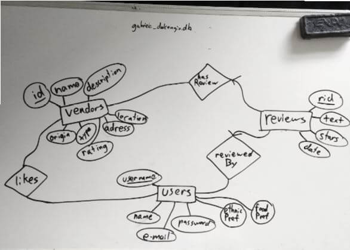
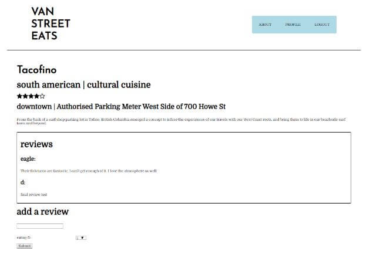
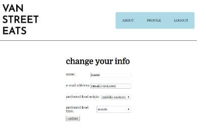
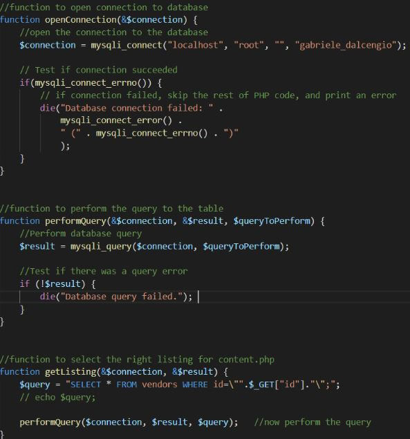

Gabriele Dal Cengio
Full Stack Developer
Van Street Eats
Internet Computing Technologies Final Project | Fall 2019

Context
For a semester long final project, we were tasked to create a dynamic website using php, mySQL and AJAX technologies. Our requirements were that users must be able to sign up and sign in with encrypted passwords and that we displayed linkable cards from a list page. On this list page, the content cards must have a way to categorize initially and a way to filter further.
Process
Database Design
I first created a simple database schema with 3 tables. In the vendors table, we have the superkey ‘id’. This auto increments with each added and is a way to keep this table organized easily. The rest of the attributes are general strings except for rating. Rating ties into the review table and will always only be 0 - 5. One of which contains all the data relating to the street vendors, another containing user information and the last containing all review information. In the Reviews table, I demonstrated the concept of one to many between the relationships. The users table contains all information about a registered user. Its primary key is username as none are allowed to be the same. There’s a hashed password, full name, email to soft prevent filling the database with spam. This table is connected to the other two via relationships “likes” and “reviewedBy”. The like relationship is for homepage customization and the reviewedBy table is for displaying the reviews on the webpage. (initial names are slightly different than the ones in the final database)
Dynamic Content
I first created a page to list all of the vendors from my database (first image shown above). When a user clicks on one of the content cards on the listing page , then they will be taken to a custom page like this. The card brings the user to the content.php url and appends the primary key of the vendor using the HTTP method GET. Looking back I would redesign this page first.
User Functionality
I then went on to create the user sign up functionality. All data in the semantically marked up form is unable to submit unless the data is valid. When the user enters valid information, the user data is registered and they will be able to login. I did not find too much difficulty at this part.
Once they have logged in, they are able to edit their information. Submitting this edit form will change any attributes specified.
What I've Learned
I really enjoyed how much I’ve learned in this project, having the interaction between front end and databases gave me the practical knowledge I needed to create similar, more refined projects. I had a bit of a struggle making sure that my query strings were consistent. They constantly had bugs and that is where I spent the most time. I enjoyed jquery very much and will be using it much more in the future. Another challenge I had was the overall ux. I need to get better and iterate quicker when designing websites. I’m satisfied as this was a first attempt, but there are many areas I could improve. The most important area I found was modularization of code. Since I did not quite understand php at the start, I wrote spaghetti code. If I were to redo this project, I’d modularize it from the start to keep it plenty organized.
